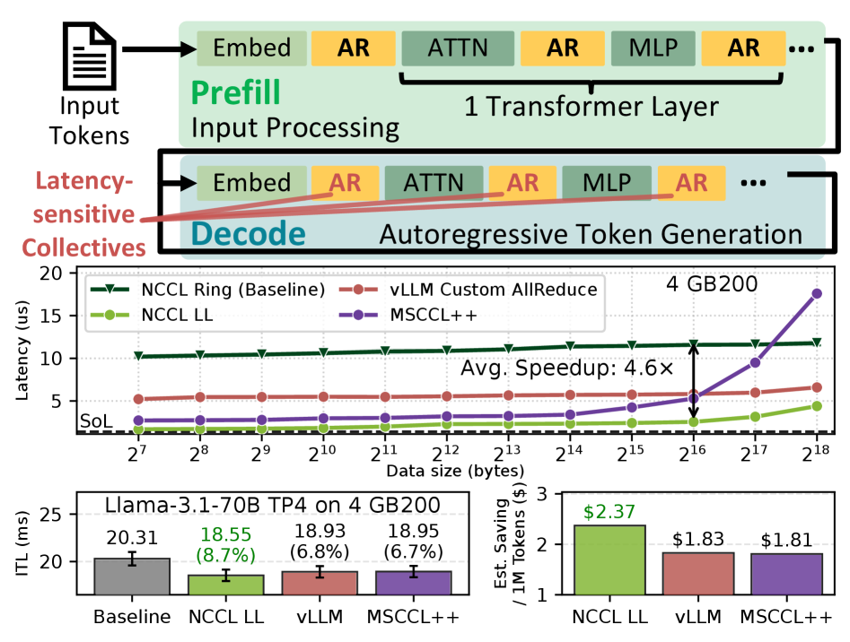
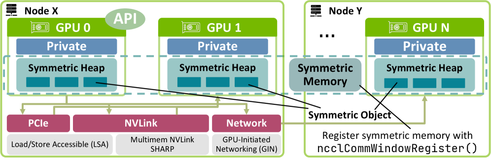
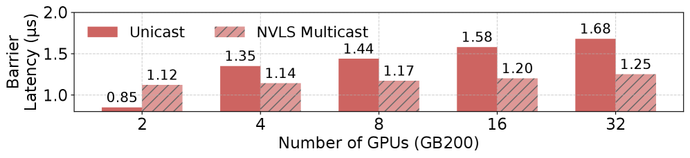
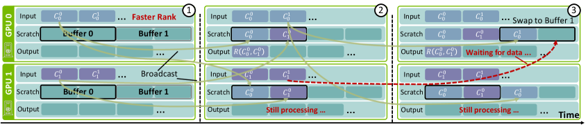
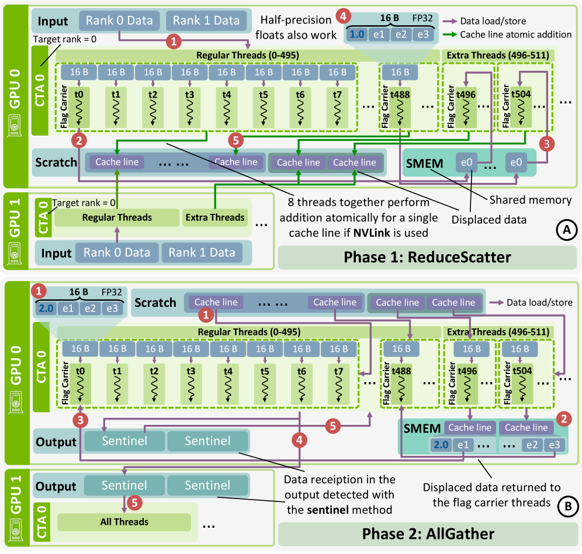
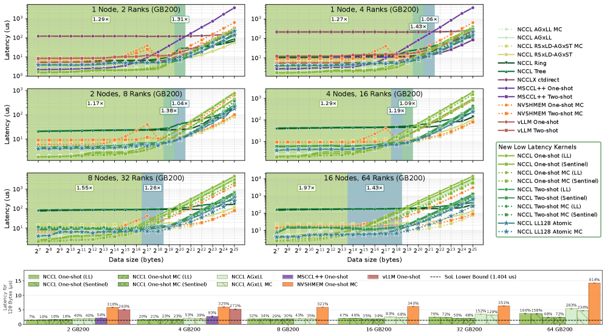
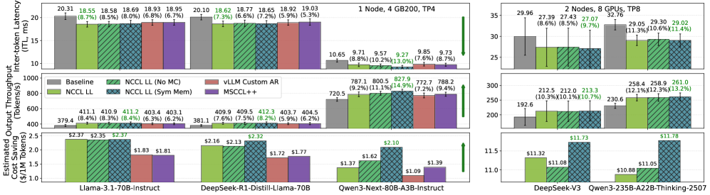

GPU集体通信通常以带宽为优化目标，但长上下文解码密集型LLM推理越来越受延迟限制。在4块GB200 GPU上，一次小消息AllReduce的延迟从NCCL ring的11.0μs降到了2.37μs，距硬件Speed-of-Light（SoL）下限仅差7%。
LLM推理中，许多小型集体操作直接位于token生成的关键路径上。长上下文推理时，batch size减小，AllReduce以相对较小的消息大小频繁调用：延迟而非带宽成为主导瓶颈。 vLLM、SGLang、TensorRT-LLM等推理框架已把通信延迟作为一级优化目标。

低延迟集体不仅对LLM推理重要，对传统科学计算同样关键。许多模拟器和求解器在紧密同步的阶段中频繁执行小型全局归约。

检查现有最先进框架中的one-shot和two-shot AllReduce实现后，本文观察到这些设计通常依赖显式内存屏障来同步对等节点。
使用NCCL的ncclLsaBarrierSession测量，每次屏障的延迟超过1μs。 在许多AllReduce内核中需要两个这样的屏障，占总延迟的40%。消除这些屏障可以带来显著的性能收益。

本文采用push模式，并引入四种技术来消除全局内存屏障，每种针对不同消息大小区间。
LL去掉了信号步骤，将8字节标志与8字节数据打包，用16字节原子存储一起传输，使接收方通过直接检查标志就能判断数据就绪。代价是有效负载带宽减半、scratch缓冲区使用翻倍。
接收scratch缓冲区初始化为哨兵值（如 -NaN），数据直接写入，接收方轮询直到值从哨兵变化。保留完整有效带宽，使用更少的scratch空间。 缺点是需要每次迭代前重置缓冲区，且传输值不能等于哨兵值。
核心思想：每个rank与给定对等节点每迭代最多通信一次，从对等节点接收数据隐式地作为下一次发送的许可：类似于基于信用的流控制。这允许多次归约迭代而无需昂贵的全局内存屏障。

全新two-shot AllReduce算法，依赖原子加法而非显式标志。线程以8行为一组处理128字节（一个缓存行），每组的flag carrier对目标rank的scratch缓冲区执行atomic add。NVLink保证缓存行级别原子执行。

该算法仅需D/N的scratch空间，FP32每128字节仅4额外字节（≈3% 开销）。限制：需要NVLink缓存行级原子加法，仅支持单/半精度加法，结果非确定性。
4×GB200上，小消息AllReduce从NCCL的11.0μs降至2.37μs：距硬件SoL下限仅差7%。 8×H100上从18.0μs降至5.6μs。

LL128 atomic在中等消息（4KB-256KB）上最优，极小消息用one-shot LL，更大消息用two-shot哨兵。随GPU数从4增至8，延迟增长接近对数级，证明无屏障设计有效控制了同步开销。
vLLM推理（Llama-3.1-70B，4×GB200）： ITL从28.7ms降至26.2ms（降低8.7%），吞吐量提升9.5%。

cuSOLVERMp（8×H100）： 求解10000×10000矩阵，mp_sygvd执行时间从1.82秒降至0.78秒（加速2.3×）。
参考：https://arxiv.org/abs/2607.16100